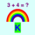

 First Grade Math Drill
THIS PAGE IS IN PROGRESS
Privacy Policy
The developer does not collect any data from this app.
Description
This is a simple math drill but with multiple reward animations. There is no sound, minimal reading requirement,
no keyboard entry or dragging required (only button clicks). The app is free, and there are no ads.
No Wi-Fi or cell signal is required.
The app starts with addition and subtraction, then progresses to missing addend, sequences, comparing numbers,
base 10 blocks, fractions, 2D geometrical shapes, telling time, fractions, bar charts, and measurement.
All problem types appear after 40 correct answers.
The child can view the number of correct answers, shown with an emoji for each one.
If the child enters an incorrect answer, a hint image appears. After 2 incorrect answers, incorrect answer buttons
become disabled on each further incorrect answer until only one is left to choose.
On a settings page (for adults but with no restrictions) children may be added by name and assigned
a level 1 - 3. The name, level and the number of correct answers are stored on your device for future
sessions.
Instructions for the Adult
On first running the app, there is the option of adding a child's name. Later the wheel at the bottom of the home page
opens a settings page. Here children can be added or deleted. There are 3 levels of increasing difficulty,
and a level can be chosen for the current child. The clear-settings button sets the number of correct answers
to zero and the level to 1 for the current child.
There is no penalty for incorrect answers.
A picker on the home page allows selection of a child's name. It defaults to the last child playing.
There is no automatic progression between levels -- the settings page must be used.
Instructions for the Child
On the home page, choose your name if it's not already selected, or have an adult add your name.
Click the green "Go" button, and look at the question. Click one of the green buttons with the answer.
If the answer is correct you can click the green arrow at the bottom to see the next problem.
If the answer is incorrect, help will be provided. Once you have at least one correct answer,
you can click the gold button at the bottom to see an emoji for each correct answer. The emoji contents
will be scrolled if you have many of them. The "back" button at the top returns you to the problems.
After more than 2 incorrect answers, some of the answer buttons will be disabled, to guide you to the correct one.
The green next button can be clicked immediately after a correct answer. You don't have to wait for the animations.
After 3 incorrect answers, the next button will become enabled, allowing you to skip to the next problem.
This page was last updated April 3, 2022. The developer may be contacted at pdyerr icloud com.